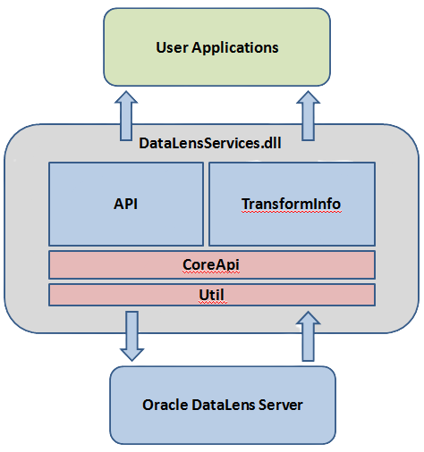
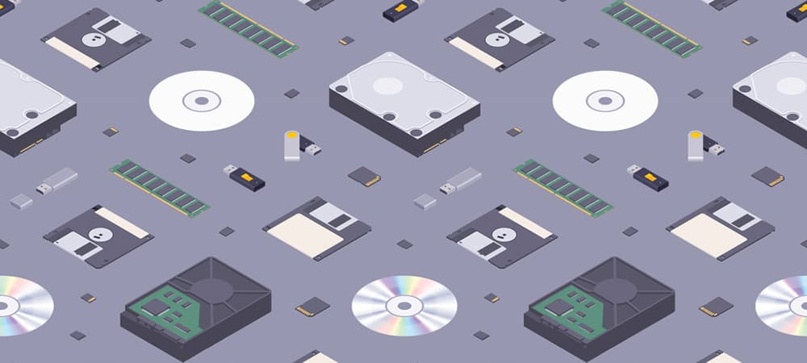
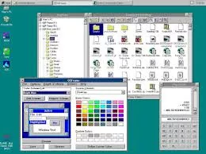

Um evento é uma resposta de um objeto, a partir de código escrito previamente. Na programação orientada a eventos, uma rotina especializada em monitorizar os eventos avisa o código especializado em responder a um determinado evento que esperava ocorreu, e então o código recém avisado responde ao evento.

Interface de programação de aplicações, cujo API (Application Programming Interface), é o conjunto de rotinas e padrões estabelecidos por um software para a utilização das suas funcionalidades por aplicativos que não pretendem envolver-se em detalhes da implementação do software, mas apenas usar seus serviços.
O modelo de memória

Local onde são armazenados os dados para o processamento, os dados intermédios, os resultados finais a até mesmo o programa que num dado momento, está a ser executado.
existem dois tipos de memória. memória primária e secundária. exemplo de memória primária são RAM,ROM. exemplo de memória secundária são HDD, SSD.
Conceito de Multitarefa

Trata-se de um sistema operativo que permite a realização de apenas uma tarefa década vez. Um dos mais famosos sistemas operativos monotarefa é o MS-DOS, um dos primeiros sistemas operativos para computadores pessoais.